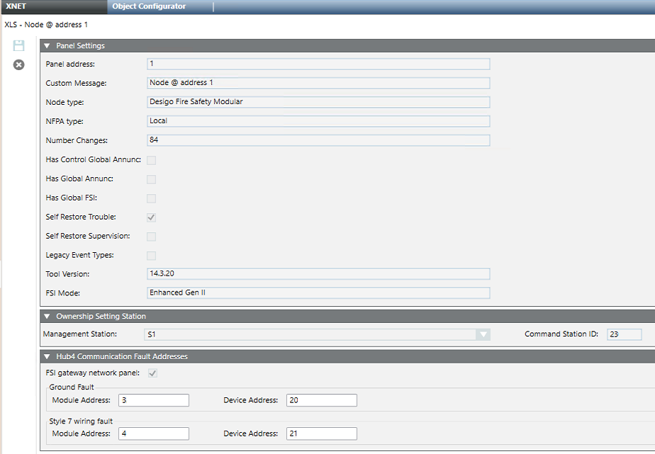

XNET Panel Configuration Reference
The XNET tab of the XNET panel node contains the following expanders:
- Panel Settings, where you can see and check the panel parameters from the imported configuration file. For configuration instructions, see Configuring an XNET Fire Network.
- Ownership Settings Station expander where you select the management station to associate (UL 864 10th ed. / ULC 527). For more information, refer to Ownership of XNET Fire Panels.
- Hub4 Communication Fault Addresses, (Fire WAN only), where you select the HUB-4 fault inputs. For configuration instructions, search for Configuring a Fire WAN.
Panel Settings
This expander presents the following read-only fields:
- Panel address: XNET address of the panel
- Custom Message: Panel name
- Node type: Fire panel type (XLS up to version 12, then Modular)
- NFPA type: Local or Proprietary. The Proprietary option has some limitations, for example no block acknowledge is allowed.
- Number Changes: Configuration version, as in the imported file. To detect inconsistencies, this is checked against the version detected from the panel at runtime.
- Has Control Global Annunc.: The panel has control on the global annunciation functions.
- Has Global Annunc.: The panel can be a global annunciation station.
- Has Global FSI: The panel can be a global WAN station.
- Self Restore Trouble: Troubles do not require reset.
- Self Restore Supervision: Supervision events do not require reset.
- Legacy Event Types: Backward-compatible mode that reduces the number of events.
- Tool Version: Version of the Zeus tool that created the imported file.
- FSI Mode (Fire WAN): FSI protocol mode in use.
For more information, refer to the Zeus tool documentation.
Ownership Settings Station
In this expander you can select the management station associated to the panel according to UL 864 10th ed. And ULC 527 norms.
- Management Station: select the station in a drop-down list.
- Command Station ID: enter the numeric ID of the station as set in Zeus tool.
Hub4 Communication Fault Addresses
In this expander, in case of a Fire WAN and depending on the connections, you can configure the HUB-4 fault inputs:
- Ground fault: Module Address and Device Address.
- Style 7 wiring fault: Module Address and Device Address.
